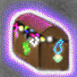
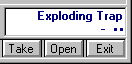

"Go down there?! I would rather burn in hell than enter that dark place!
What? How much gold did you say? Well, since you put it that way..."
- Anonymous
Running around and killing monsters can be great sport, but even the most devoted warrior would quickly lose interest without some type of reward. Like you, monsters run around and fight each other and collect valuables for themselves. Almost all monsters in the dungeon will have a little gold and sometimes items as well.
Chests & Boxes
After an encounter with a group of monsters (if you survive), you will collect all of the gold that you can find. However, if the monsters do have a type of container, they will store their valuables in it. That's where the thieving skills come in handy.
There are two types of containers. Chests and Boxes. You'll learn the difference between the two as you find them. Chests contain the best treasure while Boxes contain your average find. Keep in mind that quite often the better the container, the deadlier the trap.
Examining Traps
When you are in a room with a container, you will find that the lower right hand corner of the Main Dungeon Window displays some information. The first bit of information (e.g. Exploding Trap) is the trap (if any) that you think is protecting the container. Beneath the trap are symbols which represent how sure you are of the trap and how sure you are that you can disarm the trap.

The '•' characters represent how sure you are that the trap you see is the trap on the container. Four •'s represents very sure, while 1 • represents you have no idea. In front of the '•' characters, you will see the symbols that represent your chance of disarming the trap successfully (either '+','*', or '-' characters). '*' would represent 50% chance while the '+' and '-' signs represent a better/worse chance. In the above picture of the trap name and disarm information, it is noticed that the character is around 50% sure that it is an Exploding Trap (by the two •'s), but doesn't really know how to disarm it (the '-'). A '+++ ••••' would only be seen through the eyes of a very experienced thief!
Quite often, your character will come along a Magically Locked chest. The only way to open one of these chests is with the "charm of opening" spell, which various guilds (e.g. Thief's guild) have access to.
Sometimes, a character will encounter monsters that are so much quicker than themselves that they don't have time to look very closely at the container to identify whatever trap it may have until after combat.
To open a chest during peacetime or combat, either press 'o' or click on the chest. If the chest is Magically Locked or Unidentified, nothing will happen.
Knowing the Traps
When triggered, some traps will affect all characters in the party while others will only affect the opener. Below is a list of the known traps that can be found on chests and their affects.
Disease Spores
This trap releases gaseous spores into the air that will Disease the opener and any other party members.
Poison Gas
A burst of poisonous gas that shoots out and poisons all of the characters in the vicinity of the chest.
Exploding Box
Explodes upon contact, inflicting damage on all Characters in the group.
Fire Trap
A huge ball of fire that explodes and envelops the opener and any other characters in the area for a good amount of damage. Characters who are Fire resistant will take less damage, but will still be affected by the exploding pressure of the flames.
Slime
A disgusting goo that instantly attaches itself to one of the items belonging to the opener and eats it away.
Fate
Sometimes good, sometimes bad. Never predictable.
Teleporter
These traps will teleport the opener to a random location on the same level. Once a teleporter trap is triggered, the chest then becomes untrapped.
Fear
Will scare away all companions of the opener.
Withering
Will age the opener four weeks.
Blackout
A pulse of Anti-Magic that will remove all resistances and modifiers (i.e. Levitation) from the opener unless the resistances or abilities come from an equipped item or natural resistances.
On all of the above traps, the intensity of the damage done is based on the level of the monster that set the trap. The higher level the monster, the more deadly/effective the trap is.
Once a container is opened, all of the surviving party members (or single character) will divvy up the loot, sharing it evenly. Most of the time, items will only be found in chests, even though there is the remote possibility of finding an item outside of a chest.
Chests that are identified and not magically locked can also be opened during combat as they are during non-combat, except that it usually takes a number of rounds and makes your character much easier to hit.
Move to the next section to read about Companions.
Move to the previous section to read about Encounters and Combat.
M1: "The Depths of Dejenol" is a Trademark of Decklin's Domain Ltd and is © Copyright 1994-2026 All Rights Reserved